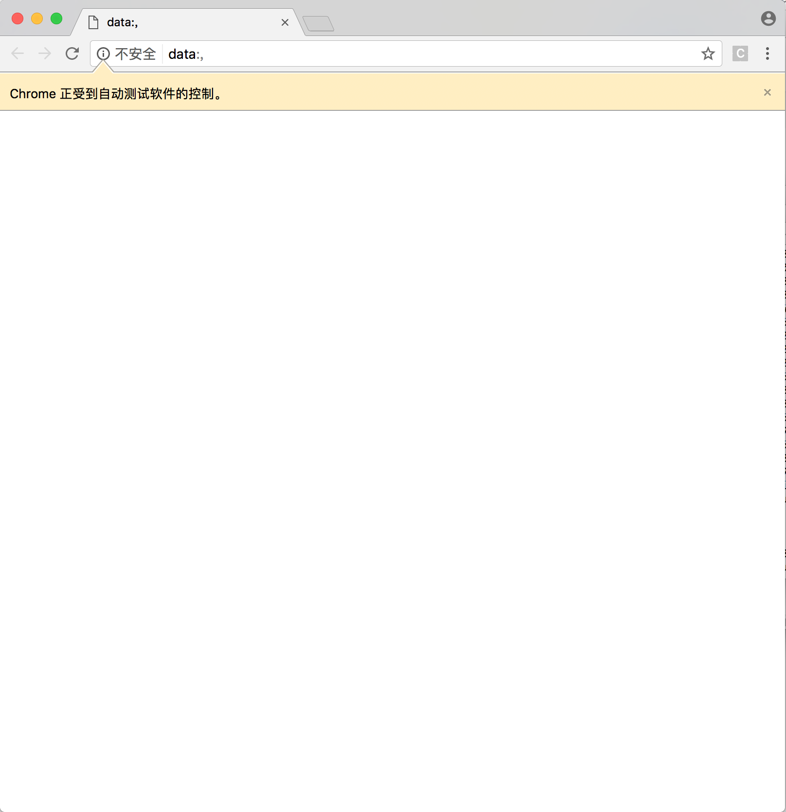

Python
安装
Windows
安装python
- 官网下载安装包,安装到目标位置
- 安装完成后右键点击
我的电脑->属性->高级系统设置->环境变量,将python安装的路径添加到PATH里面,例如;c:\python2.6.这里注意如果是直接在文本后面追加的话记得前面要加分号;.添加完成之后再命令行中输入python能够进入python shell,说明安装成功
安装pip
pip is already installed if you’re using Python 2 >=2.7.9 or Python 3 >=3.4 binaries downloaded from python.org, but you’ll need to upgrade pip.
官网的说法是2.7.9以及3.4版本以上的python安装后已经包含了pip,不需要另外安装,执行pip install命令安装最新版本即可(参数-U表示安装或更新至最新版)
1 | pip install -U pip |
版本不满足时,首先下载get-pip文件,并在命令行中切换至文件所在的路径执行文件
这里吐槽一下windows的cmd实在不好用,powershell也一般,推荐一个暂时感觉还不错的命令行工具cmder
下载地址
1 | # 切换至指定路径 |
安装selenium
官网链接
安装完成pip之后,使用命令安装selenium包
1 | $ pip install -U selenium |
下载WebDriver
ChromeDriver
截止目前最新的windows版本的driver的下载地址
将解压后的
chromedriver.exe文件放在指定路径,例如D:\Selenium\chromedriver.exe路径下,将D:\Selenium\目录添加至环境变量PATH中
Demo
1 | from selenium import webdriver |
Mac
1 | pip install selenium |
测试是否安装成功
1 | from selenium import webdriver |
安装成功的话这里应该显示一个空的浏览器

Introducing the Selenium-WebDriver API by Example
照搬官网的例子
1 | from selenium import webdriver |
上面差不多就是一个完整的例子了,实际操作过程中有一些地方灵活运用就好
打开浏览器
这里不同浏览器的话需要下载对应的webdriver,并且将文件所在的路径添加到系统的环境变量
1 | from selenium import webdriver |
关闭浏览器
测试的话一般在主程序的finally里面调用driver.quit(),不然有时候会因为异常导致没有退出进程,然后测试的机子会开很多个进程然后卡的不行…
1 | from selenium import webdriver |
打开页面
以百度为例
1 | from selenium import webdriver |
定位UI元素
1 | <html> |
1 | from selenium import webdriver |
by id
1 | <div id="coolestWidgetEvah">...</div> |
1 | # 写法一 |
by class
1 | <div class="cheese"><span>Cheddar</span></div><div class="cheese"><span>Gouda</span></div> |
1 | # 写法一 |
by tag
1 | <iframe src="..."></iframe> |
1 | # 写法二 |
by name
1 | <input name="cheese" type="text"/> |
1 | # 写法一 |
by link text
1 | <a href="http://www.google.com/search?q=cheese">cheese</a>> |
1 | # 写法一 |
by partial link text
1 | <a href="http://www.google.com/search?q=cheese">search for cheese</a>> |
1 | # 写法一 |
by css
1 | <div id="food"><span class="dairy">milk</span><span class="dairy aged">cheese</span></div> |
1 | # 写法一 |
by xpath
1 | <input type="text" name="example" /> |
1 | # 写法一 |
执行JavaScript
1 | # execute_script的参数就是要执行的JavaScript代码 |
获取文本内容
首先定位到目标元素,然后取text属性
1 | # 定位元素 |
输入内容
选择下拉框
1 | # 定位到页面元素 |
1 | # available since 2.12 |
点击事件
1 | # 定位到submit控件 |
切换页面
1 | <a href="somewhere.html" target="windowName">Click here to open a new window</a> |
1 | # 切换至名为windowName的窗口 |
导航
简单的模拟浏览器的历史导航功能,感觉用的不多
1 | # 浏览器前进 |
sample
1 | from selenium import webdriver |
Cookie
1 | # Go to the correct domain |
代理
1 | profile = webdriver.FirefoxProfile() |
拖放
1 | from selenium.webdriver.common.action_chains import ActionChains |